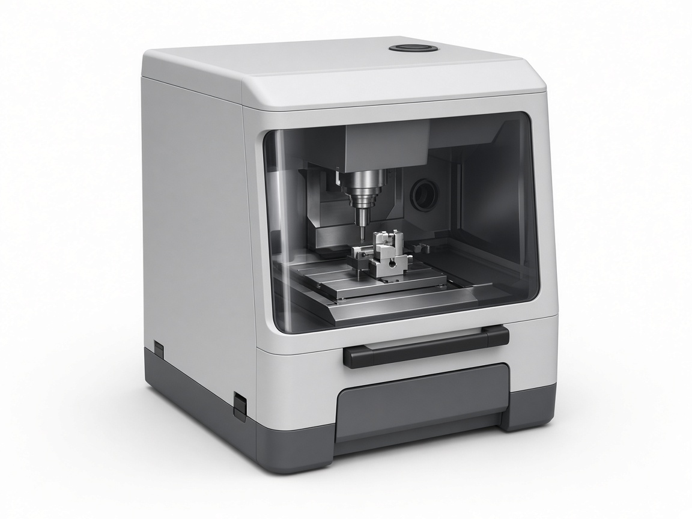
Zirkonzahn
Precision milling for zirconia frameworks and full-arch prostheses. Milling · South Tyrol, Italy.
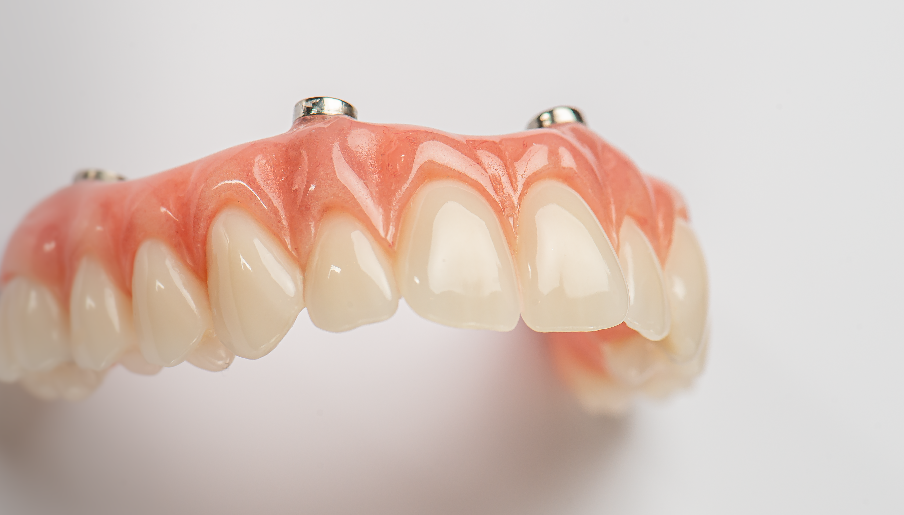
AOX full-arch work for Melbourne clinicians. Milled in-house on Zirkonzahn, Roland and Aidite.
Placeholder photos: replace with real ProTec photography.
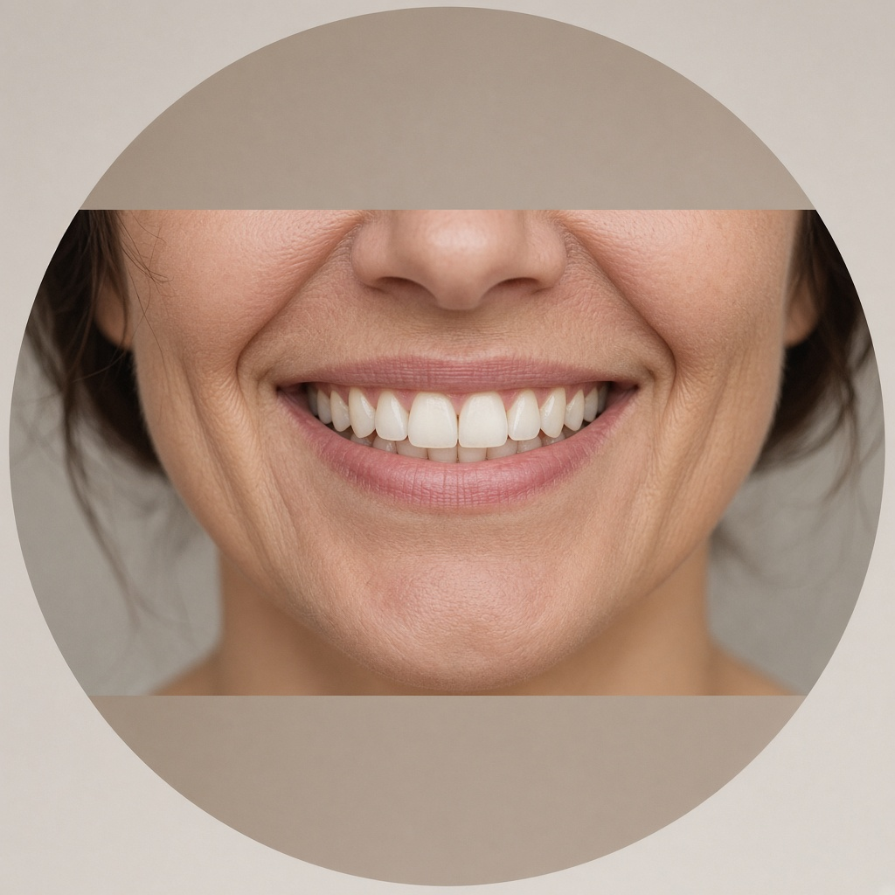
Melbourne dental laboratory
ProTec Dental Laboratory partners with clinicians on All-on-X (AOX) implant restorations — from photogrammetry and case planning through to precision-milled, hand-finished final prostheses.
From simple cases to extremely complex restorations, clinicians rely on our experience with AOX workflows. We adapt to the way you work and keep up with the latest innovations from the major implant companies.
About us

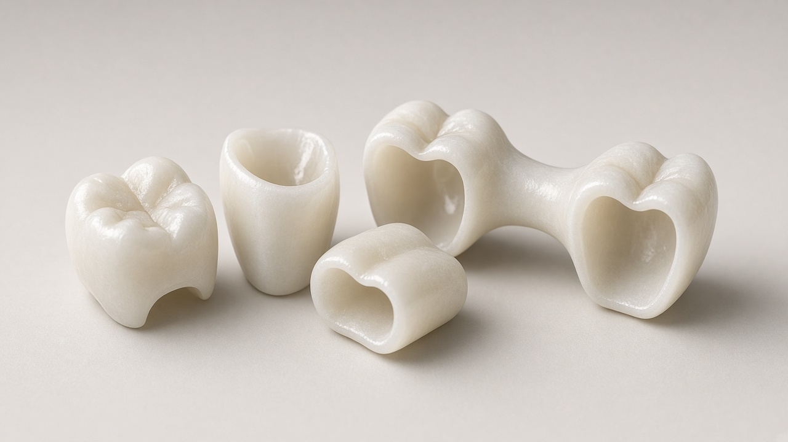
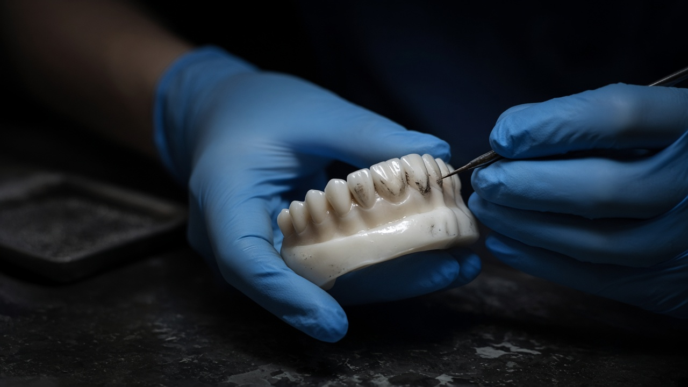
How we work
Every case we take on is driven by a commitment to excellence and to the outcome you and your patient are aiming for. Implant positions are captured accurately, the design is shared for your approval, and the final prosthesis is milled in-house and finished by hand.
Our AOX serviceServices
Partnering with dental professionals to deliver precise, predictable restorations.
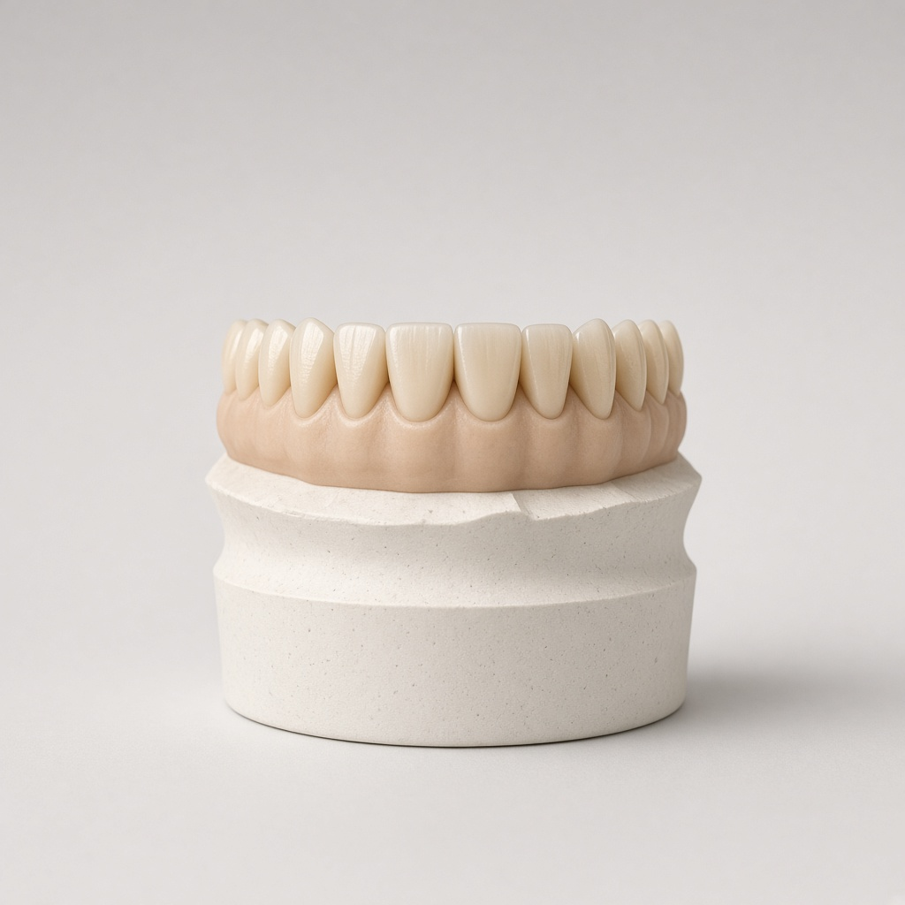
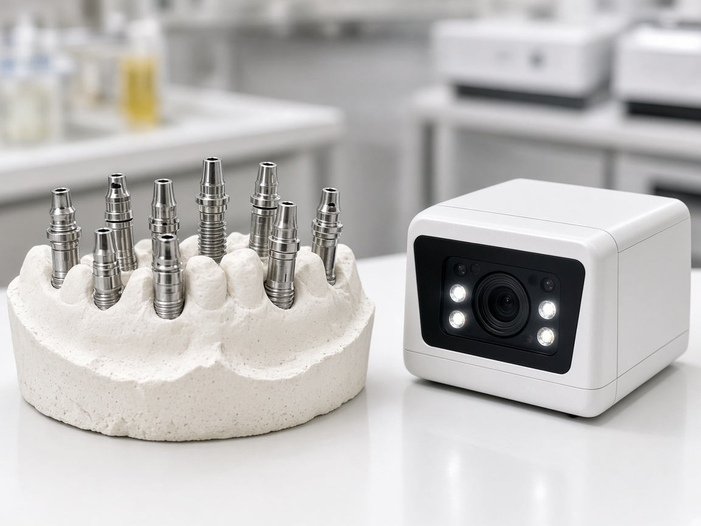
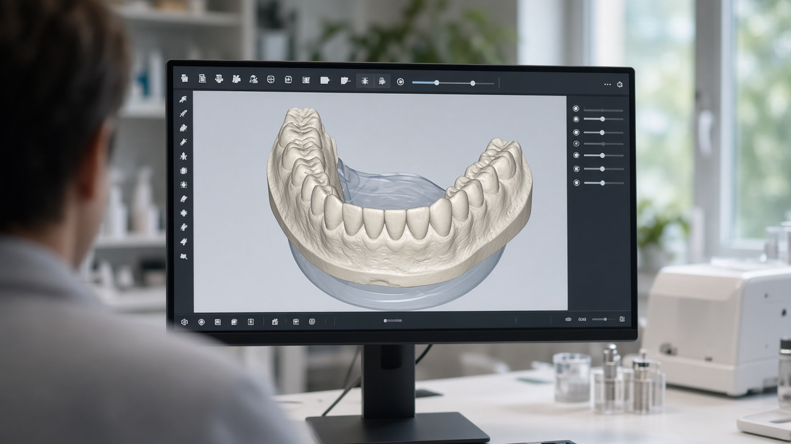
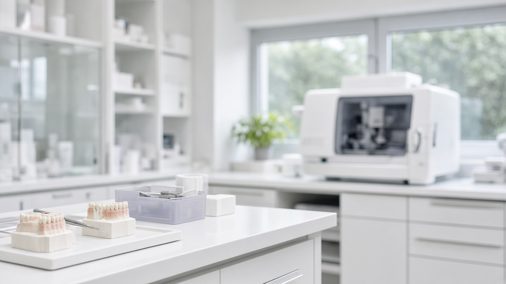
In-house milling
Running multiple milling platforms lets us match each restoration to the right machine and material — and keeps production moving. [Add machine models]

Precision milling for zirconia frameworks and full-arch prostheses. Milling · South Tyrol, Italy.
Reliable dental milling for crowns, bridges and provisional restorations. Milling · Japan.
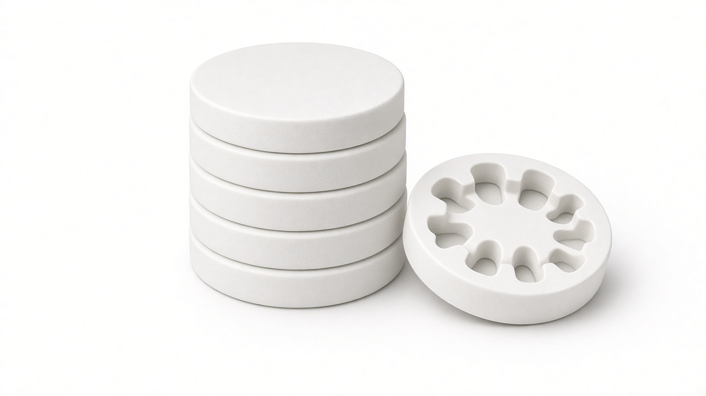
Milling capacity for zirconia restorations, keeping turnaround consistent.
Our work
Placeholder photos — not ProTec cases. Replace with consented case photography in assets/img/gallery/.
Example comparison only — not a documented patient case.
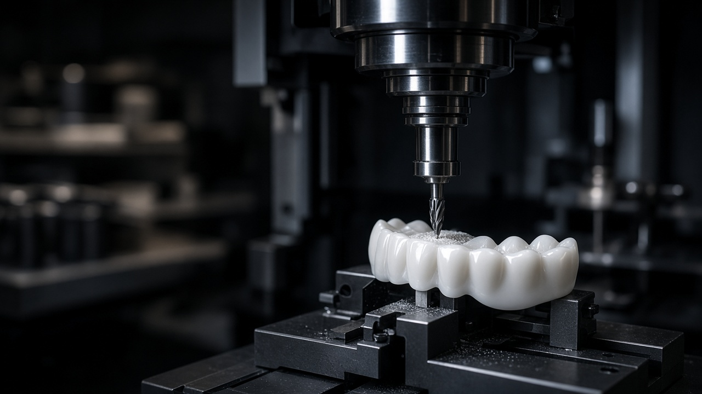
“Example testimonial — replace this with a real quote from a clinician you work with, about fit, communication or turnaround.”
Send a case
Talk it through with our technicians before surgery, or send your records and we’ll take it from there.